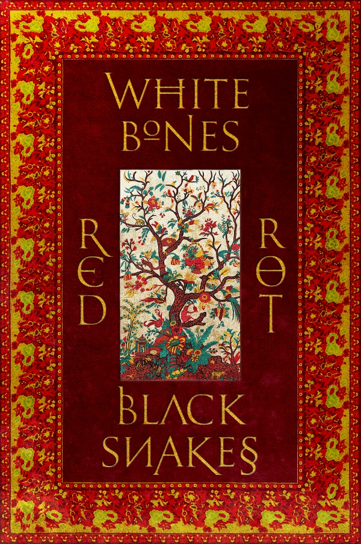
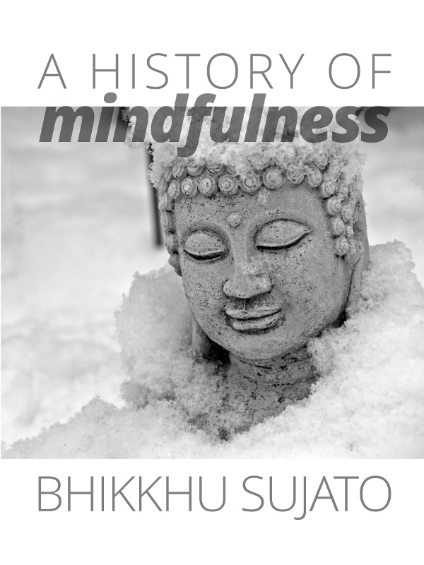
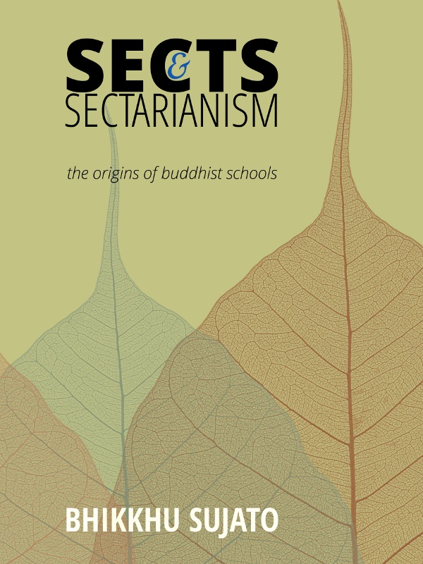
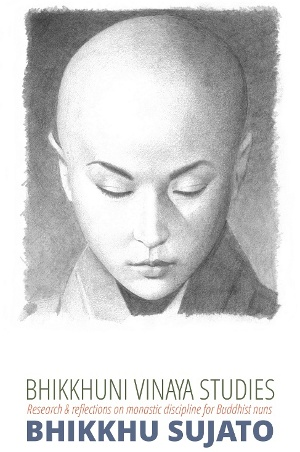

My books at Santipada
2012-10-03T12:01:02
Original: https://sujato.wordpress.com/2012/10/03/my-books-at-santipada/
The final versions of all six of my books* are finished and available through Santipada.org.
These books have been a labour of love for me, and are the fruits of countless hours of perspiration and inspiration. I’ve done everything I can to ensure that they are as well written, researched, and presented as possible, and I make them available as widely as I can. You can read them on the web, download them, get an ebook, and even, for the traditionalists among you, order a paperback version. Here’s the blurb for each of these books.
I don’t have any way of publicizing these apart from this blog, so I’d really appreciate it if you’d spread these around on whatever network or social media you use. On the Santipada site I encourage donations to Buddhist Global Relief, and the (minimal) proceeds from book sales go to Santi FM.**
Enchanting, powerful, horrific, beautiful, wise, deadly, compassionate, seductive. Women in Buddhist story and image are all these things and more. She takes the signs of the ancient goddess – the lotus, the sacred grove, the serpent, the sacrifice – and uses them in astonishing new ways. Her story is one of suffering and great trials, and through it all an unquenchable longing to be free. This beautifully illustrated work is as layered and subversive as mythology itself. Based directly on authentic Buddhist texts, and informed with insights from psychology and comparative mythology, it takes a fresh look at how Buddhist women have been depicted by men and how they have depicted themselves.
Bhaddā was a true original. An ascetic, a philosopher, and a murderer, who became one of the best-loved of all the bhikkhunis. Here is a vivid re-imagining of her story: a Buddhist nun like you’ve never seen before.
The Satipaṭṭhāna Sutta is the most influential scripture in Buddhist meditation. It is the foundation text for the modern schools of ‘vipassanā’ or ‘insight’ meditation. The well-known Pali discourse is, however, only one of many early Buddhist texts that deal with mindfulness. This is the first full-scale study to encompass all extant versions of the Satipaṭṭhāna Sutta, taking into account the dynamic evolution of the Buddhist scriptures and the broader Indian meditative culture. A new vision emerges from this groundbreaking study: mindfulness is not a system of ‘dry insight’ but is the ‘way to convergence’ leading the mind to deep states of peace.
Why are there so many schools of Buddhism? Are the differences just cultural, or do they have fundamentally different visions of Dhamma? This work assesses the claims of the traditions, and takes into account to findings of modern scholarship. It pays special attention to the origins of the monastic orders. If we are to understand the differences, and sometimes tensions, between the schools of Buddhism today, we must examine more closely the forces that spurred their formation.
 Serenity and insight are the two great wings of Buddhist meditation. They each have a special role to play in the path to Awakening. While some modern approaches seek to marginalize serenity in favor of ‘dry’ insight, the Buddha’s own discourses place serenity right at the center of the path. This book collects virtually all the significant passages on this topic that are found in the early discourses, carefully elucidated for the modern reader.
Serenity and insight are the two great wings of Buddhist meditation. They each have a special role to play in the path to Awakening. While some modern approaches seek to marginalize serenity in favor of ‘dry’ insight, the Buddha’s own discourses place serenity right at the center of the path. This book collects virtually all the significant passages on this topic that are found in the early discourses, carefully elucidated for the modern reader.
Although historically marginalized, Buddhist nuns are taking their place in modern Buddhism. Like the monks, Buddhist nuns live by an ancient system of monastic law, the Vinaya. This work investigates various areas of uncertainty and controversy in how the Vinaya is to be understood and applied today.
In addition to these books, I have updated and improved two old websites on bhikkhuni ordination: Sikkhamana and Bhikkhuni Patimokkha. These consist mainly of translations and comparative tables for those interested in a serious study of issues relating to bhikkhuni ordination.
* Not counting the illustrated book Beginnings, which was previously available at Budaedu, but appears to have run out.
** For those who might be curious about my policy re selling books, basically I would prefer for everything to be given away free. Most people who read them will get them via a free distribution publisher or from a free download. You can also buy them through the print on demand publisher Lulu.com. In this case the price just covers the printing and postage, as Lulu does not require that the author takes any royalties. However, Lulu also makes available distribution through Amazon and Barnes & Noble, etc. And to enable this one must accept a certain minimum of author royalties. I don’t want this for myself, so it is a donation for Santi.